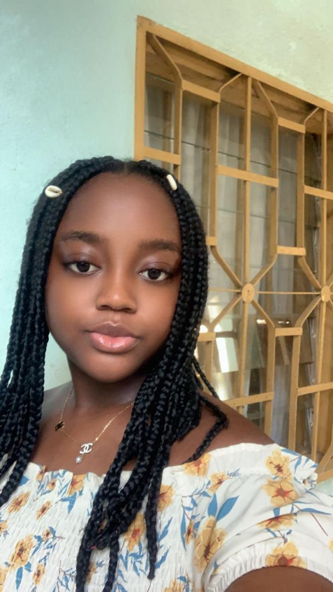

CONTACT
+237 677296472 
Kotto, Bonnamoussadi 
Douala 
atefalori@icloud.com
LANGUES
Français : Langue maternelle
Anglais : Niveau moyen
Allemend : Niveau basique
CENTRES D'INTÉRÊT
Danse
Sport
Musique
LORI TEZEMBONG
CHEF DE PROJET
Professionnel spécialisé dans la gestion et la coordination de projets informatiques complexes.
Doté d'une solide expérience en planification stratégique.
Fort d’expériences réussies au sein d’entreprises de renom.
EXPERIENCES
PROFESSIONNELLES
Chef de Projet Informatique
Entreprise Alliance - Douala, Cameroun
Janvier 2025 - Présent
- Pilotage de projets de développement logiciel.
- Mise en œuvre de méthodologies Agiles.
- Surveillance et gestion des risques,
Chef de Projet IT
Publicis Groupe - Yaoundé, Cameroun
Décembre 2024 - fevrier 2020
- Gestion des projets de migration de systèmes d'information.
- Suivi de la performance des projets à travers des indicateurs clés (KPI).
- Formation et encadrement des membres de l'équipe sur les nouvelles technologies et les meilleures pratiques.
Chef de Projet Junior
Entreprise C- Douala, Cameroun
Mars 2017 - Janvier 2014
- Participation active à toutes les phases des projets de développement.
- Utilisation d'outils de gestion de projets comme Jira et Trello pour suivre l'avancement des travaux et les tâches.
- Assistance aux chefs de projet senior dans la gestion des projets de grande envergure.